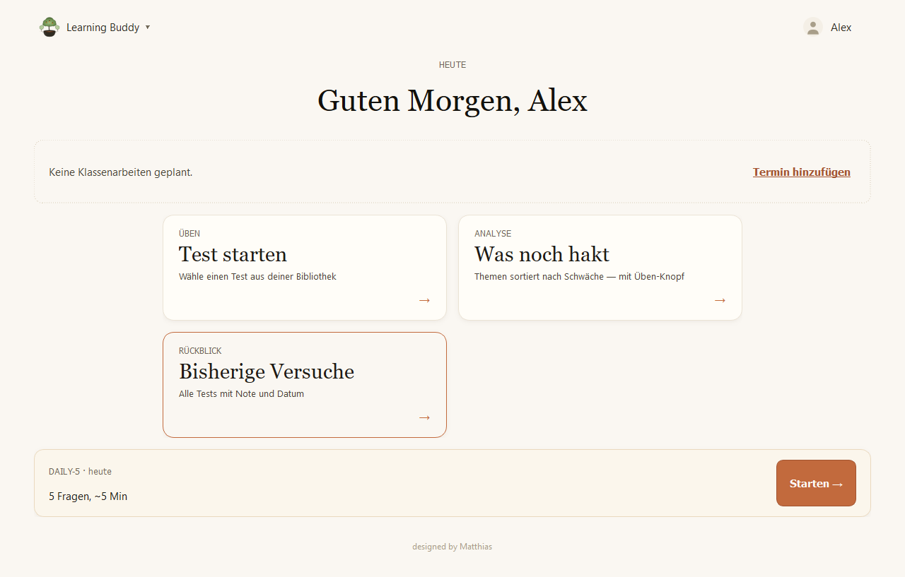
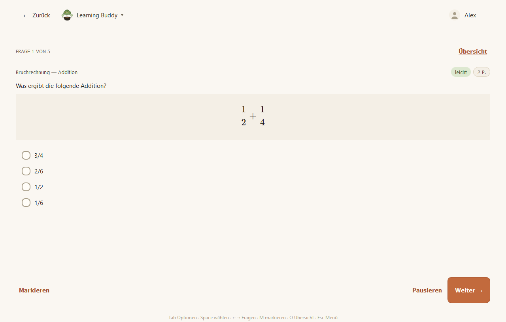
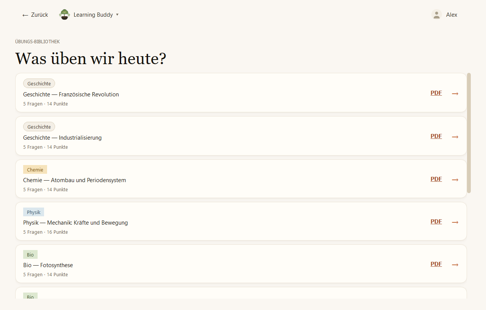

Lass dir von einer KI Übungsfragen zu jedem Thema erstellen, importiere sie und übe sie als Test. Learning Buddy zeigt dir, was du schon kannst und was noch hakt.
Für Windows herunterladen
Der Prompt-Builder erstellt den passenden Auftrag für ChatGPT, Claude & Co. Die Antwort fügst du einfach ein.
Multiple Choice, Freitext und Formeln. Mit Punkten, Note und Rückblick auf jede Frage.
Themen nach Schwäche sortiert, ein Fehlerheft für falsche Antworten und jeden Tag fünf Wiederholungsfragen.
Noten, Klassenarbeiten und Ferien im Blick, auf Wunsch per iCal-Kalender. Tests und Notenübersicht als PDF.


LearningBuddy-Setup.exeDer Assistent legt eine Verknüpfung im Startmenü an, auf Wunsch auch auf dem Desktop.Windows warnt beim ersten Start? Der Installer ist nicht signiert, deshalb zeigt Windows „Der Computer wurde durch Windows geschützt“. Klicke auf Weitere Informationen und dann auf Trotzdem ausführen.